Part 1: Learning the Basics
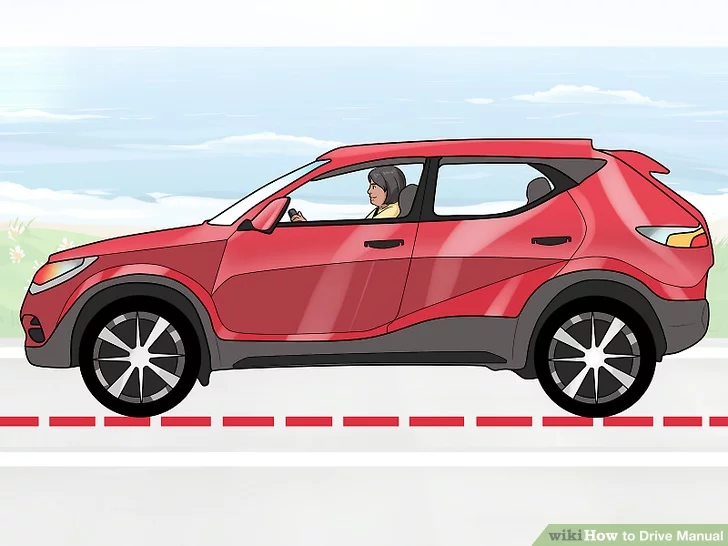
1. Start on level ground with the car off. Especially if this is your first time driving a car with a manual transmission, start slowly and methodically. Put your seat belt on once you sit down. While learning, it can be useful to roll down the windows. This helps you hear the sound of the engine revving and to shift gears accordingly.
-
The pedal on the left is the clutch, the middle one is the brake, and the accelerator is on the right (remember it, from left to right, as C-B-A). This layout is the same for both left-hand drive and right-hand drive vehicles.
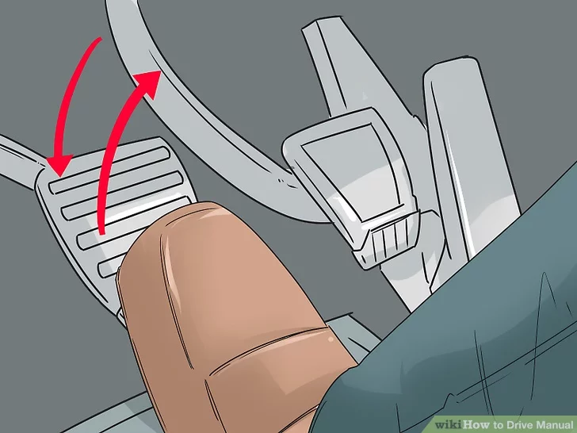
2. Learn what the clutch does. Before you start pushing down on this unfamiliar pedal on the left, take a moment to figure out the basics of its function.
- The clutch disengages the engine from the wheels. When one or both are spinning, the clutch allows you to switch gears without grinding the teeth of each separate gear.
- Before you change gears (either to move up or down), the clutch must be depressed (pushed).

3. Adjust the seat position so you can access the clutch pedal’s full range of motion. Slide forward enough to allow you to press the clutch pedal (the left pedal, next to the brake pedal) fully to the floor with your left foot.

4. Press the clutch pedal and hold it to the floor. This would also be a good time to take note of how the travel of the clutch pedal differs from that of the brake and gas. It’s also a good opportunity to get used to slowly and steadily releasing the clutch pedal.
- If you’ve only ever driven automatic cars, it might feel awkward to use your left foot to push a pedal. With practice, you’ll get used to using both feet in concert.
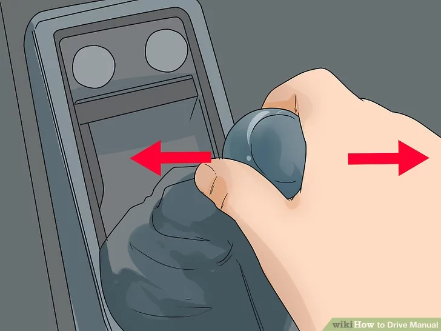
5. Move the gearstick into neutral. This is the middle position that feels free when moved from side to side. The vehicle is considered out of gear when:
- The gearstick is in the neutral position, and/or
- The clutch pedal is fully depressed.
- Don't try to use the gearstick without having the clutch pedal depressed, because it simply won't work.
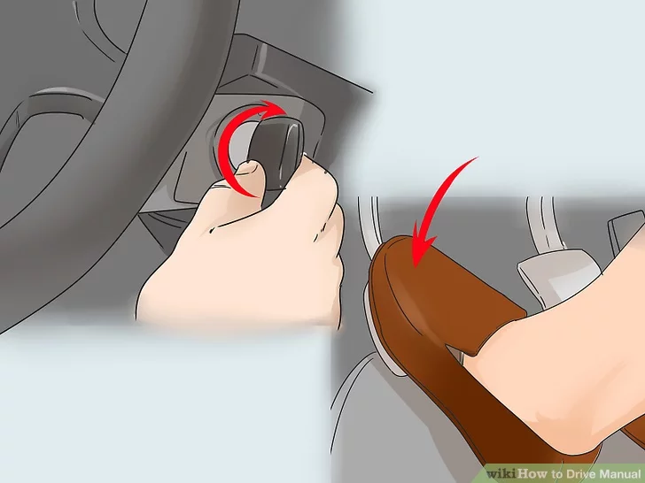
6.
Start the engine with the key in the ignition, making sure the gear stick is still in neutral. Make sure the handbrake is on before starting the car, especially if you are a novice.
- Some cars will start up in neutral without the clutch depressed, but some newer cars will not.
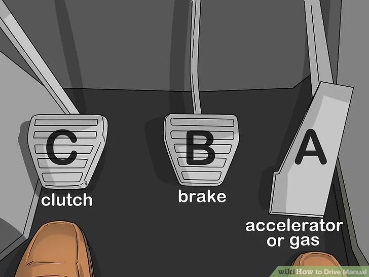
7.
Remove your foot from the clutch pedal with the car still in neutral. If you’re on level ground, you should remain stationary; you’ll start rolling if you’re on a hill. If you’re ready to move on to actually driving, make sure to release the handbrake (if it’s engaged) before you drive off.
Part 2: Moving Forward in First Gear
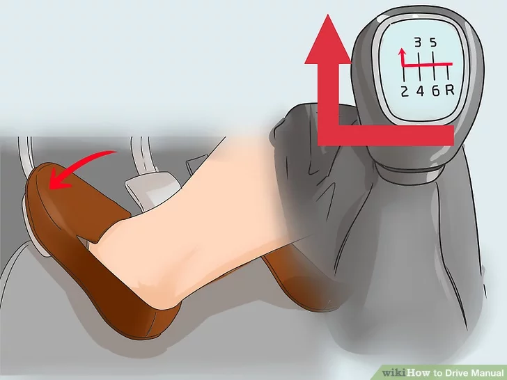
1.
Press the clutch to the floor and move the gearstick into first gear. It should be the upper-left position, and there should be some kind of visual layout of the gear pattern on top of the gearstick.
- Gear patterns can vary, so take some time beforehand to study your car’s gear layout. You may want to practice shifting through the various gears with the engine switched off (and the clutch engaged).
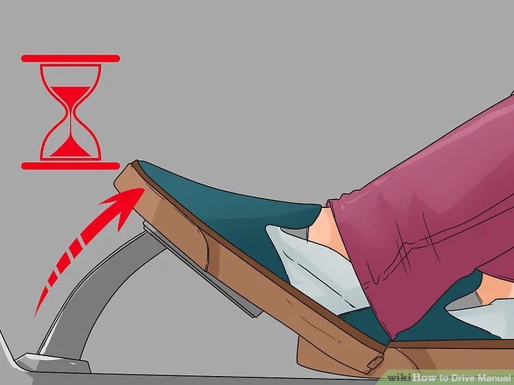
2.
Slowly lift your foot up from the clutch pedal. Continue until you hear the engine speed begin to drop, then push it back in. Repeat this several times until you can instantly recognize the sound. This is the friction point.
- When you’re shifting gears to start or keep moving, this is the point at which you’ll want to have the accelerator depressed enough to provide power.
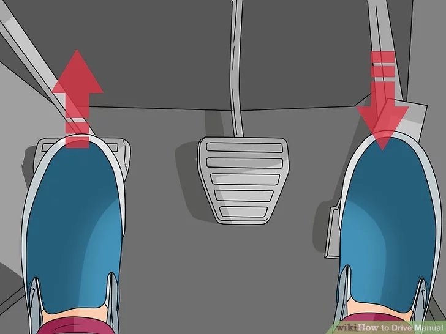
3. Let up on the clutch while pushing down on the accelerator. In order to get moving, lift your left foot up from the clutch pedal until the RPMs drop slightly. At the same instant, apply light pressure to the accelerator with your right foot. Balance the light downward pressure on the accelerator with slowly releasing pressure on the clutch pedal. You will probably have to do this several times to find the right combination of up and down pressure.
- Another way of doing it; is to release the clutch until the point the engine revs down a little, and then applying pressure on the accelerator as the clutch engages. At this point the car will start to move. It is best to have the engine rev just enough to prevent stalling as the clutch pedal is let up. This process may be a little difficult at first because you are new to the extra pedal in a manual car.
- Release the clutch fully (that is, slowly remove your foot from the pedal) once you start moving forward under control in first gear.
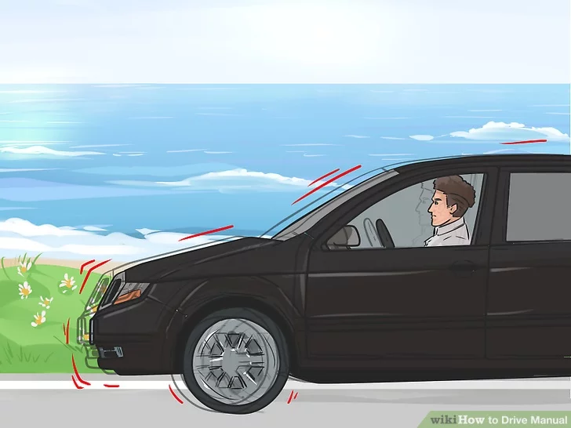
4.
Expect to stall at least a few times when you’re first starting out. If you release the clutch too quickly the engine will stall. If the engine sounds like it is going to stall, hold the clutch where it is or push down a bit further. If you do stall, depress the clutch fully, apply the handbrake, put the car in neutral, switch the engine off and restart the car as normal. Don’t panic.
- Revving the engine while the clutch is between fully up and fully depressed will wear out the clutch parts prematurely, resulting in slippage or smoking of the clutch parts at the transmission. This is called riding the clutch and should be avoided.
Part 3: Shifting in Motion and Stopping
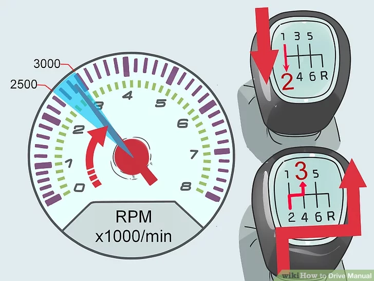
1.
Recognize when it’s time to shift up to a higher gear. When your RPM reaches about 2500 to 3000 while the car is in motion, it is time to shift to the next gear — for example, second gear if you are currently in first. The actual RPMs at which shifting is required will vary by the car you are driving, however. Your engine will begin to race and speed up, and you must learn to recognize this noise.
-
Recognize when it’s time to shift up to a higher gear. When your RPM reaches about 2500 to 3000 while the car is in motion, it is time to shift to the next gear — for example, second gear if you are currently in first. The actual RPMs at which shifting is required will vary by the car you are driving, however. Your engine will begin to race and speed up, and you must learn to recognize this noise.
- Some cars have a "Shift Light" or indications on the tachometer that will tell you when you need to shift, so you don't rev the engine too fast.
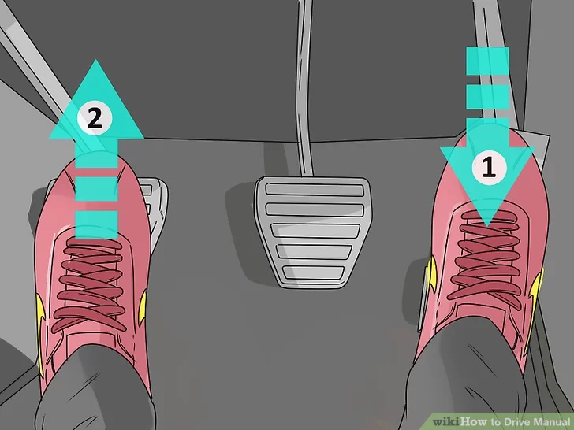
2.
Push down on the accelerator very slightly and slowly release the clutch pedal. Shifting gears in motion is the same as shifting into first from a stationary position. It’s all about listening, looking, and feeling for the engine’s cues and getting the up-and-down timing of your feet on the pedals correct. Keep practicing and you’ll get the hang of it.
- Once in gear and on the accelerator, you should completely remove your foot from the clutch pedal. Resting your foot on the clutch pedal is a bad habit, as it applies pressure to the clutch mechanism — and the increased pressure will cause the clutch to wear out prematurely.
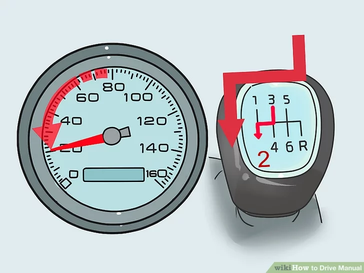
3.
Shift down into a lower gear as you slow down. If you are going too slow for the current gear you’re in, your car will shudder as if it’s about to stall. To shift down gears while in motion, follow the same process of depressing the clutch and releasing the accelerator, shifting gears (say, from third to second), and letting off the clutch while depressing the accelerator.
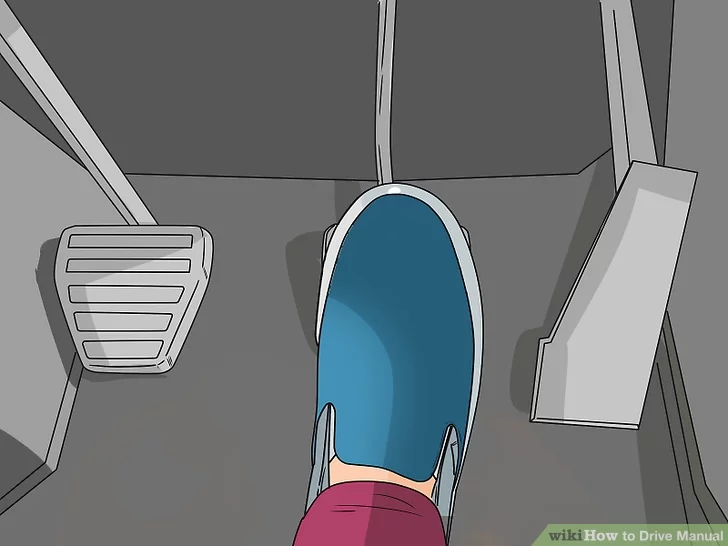
4. Come to a complete stop. To come to a stop in a fully controlled manner, shift down gradually until you reach first gear. When it’s time to come to a complete stop, move your right foot from the accelerator to the brake pedal and press down as much as is required. As you slow to about 10 mph (16 km/h), the car will be on the verge of shaking and vibrating. Press the clutch pedal fully down and move the gearstick into neutral to prevent stalling the car. Use the brake pedal to stop completely.
- You can also stop while in any gear by depressing the clutch fully and using the brake while shifting into neutral. This should only be done when you need to stop quickly, though, as it puts you in less control of the vehicle.
Part 4: Practicing and Troubleshooting
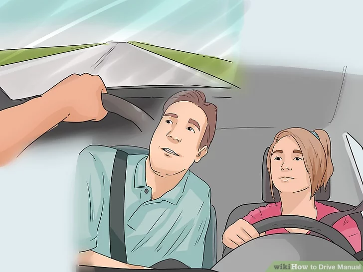
1. Practice on an easy course with an experienced manual driver. While you can legally practice alone on any public road with a valid driver’s license, you will pick up the nuances of driving a manual car faster if you have an experienced driver accompanying you. Start off in a flat, isolated area like a large (and empty) car park, then move on to quiet suburban streets. Drive around the same circuit repeatedly until you start to remember the various skills involved.
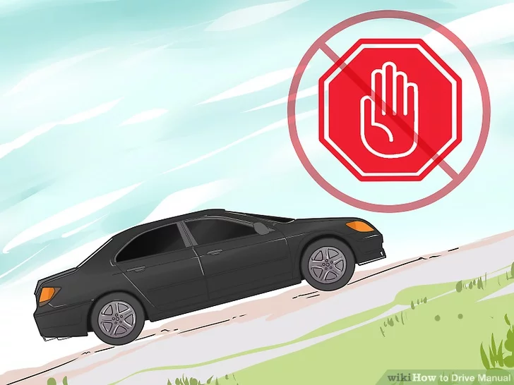
2.
Avoid stopping and starting on steep hills initially. When you’re new to driving a manual, plan routes that avoid traffic lights at the top of steep hills. Your timing and coordination in working the gear stick, clutch, brake, and accelerator needs to be fairly sharp in order to avoid drifting backwards when you shift into first gear.

- You need to be able to quickly (but smoothly) move your right foot from releasing the brake to depressing the accelerator, while at the same time letting out the clutch. You can use the parking brake to limit backward drifting if necessary, but always remember to disengage it as you start moving forward.
3. Learn parking procedures, especially on hills. Unlike automatics, manual transmission cars don’t have a “park” gear. But, simply putting the car in neutral opens the possibility of your car rolling freely, especially if parked on an incline or decline. Always use the handbrake, but don’t rely on it alone to keep your car in place whilst parked.
- If you are parked facing uphill, shut the car off in neutral, then shift into first gear and apply the parking brake. If facing downhill, do the same but shift into reverse. This will prevent the wheels from rolling in the direction of the slope.
- On extreme inclines, or simply to be extra cautious, you can also place chocks (angled blocks) behind your wheels to prevent movement.
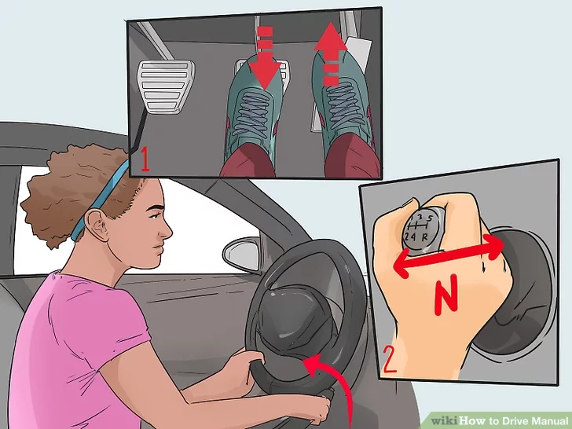
4. Stop completely before changing from forward to reverse (and vice versa). Making a complete stop when changing directions is an easy way to reduce your likelihood of causing expensive damage to your gearbox.
- It is strongly recommended to stop completely before going from reverse to first gear. However, it is possible on most manual transmissions to shift into first or possibly second when the car is moving backwards at a slow speed, but it is not recommended as this can cause excessive wear on the clutch.
- In some cars, reverse gear has a lock out mechanism to prevent you for engaging it accidentally. Before using the reverse gear, make sure you know about this locking mechanism and how to disengage it before selecting reverse.